Listens
Tracks the tempo and the beat grid, hears every kick, and knows the section: groove, build, drop, breakdown.
Free and open source · macOS
Sound becomes light.
A live club visualizer. It listens to the room, finds the kick, reads the vibe, and plays the night on screens, projectors, TV boxes and DMX lights, all on the same beat.
Latest release
How it works
A microphone is enough. Everything below happens by itself, live, and you can take any of it over by hand.
Tracks the tempo and the beat grid, hears every kick, and knows the section: groove, build, drop, breakdown.
Dark or bright, calm or intense, smooth or raw, measured over the last seconds. The looks follow it.
Picks themes, backgrounds, patterns, objects and effects, changing on phrases. Fades, ink wipes, a flight through the old look on the drop.
Up to four outputs: projectors, displays, Android TV boxes over Wi-Fi, and DMX lights over USB.
Eight surfaces pinned onto walls, pillars and ceilings, true perspective, never stretched.
Never more than three flashes a second, on screen and in the lights, whatever the music does.
The look library
Nineteen themes, each a world the director builds looks from: gold room, marble hall, night sea, acid warehouse, deep space, cathedral and more.
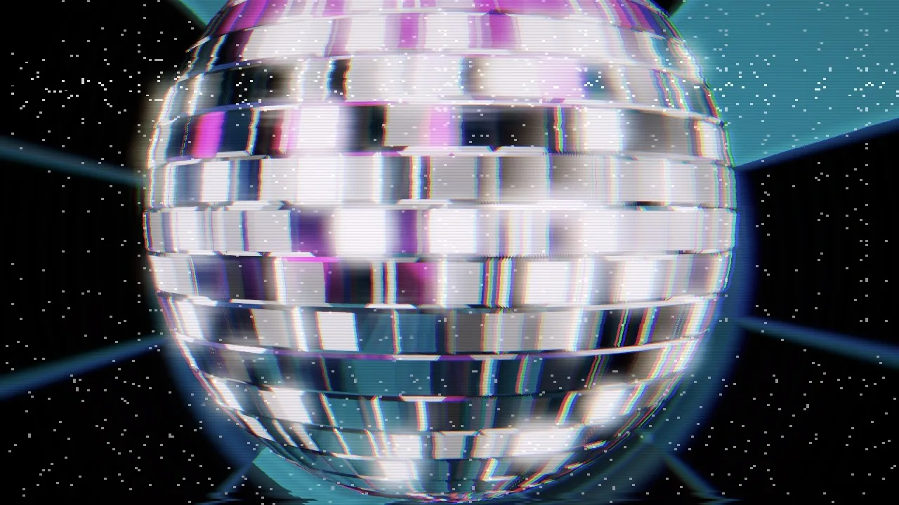
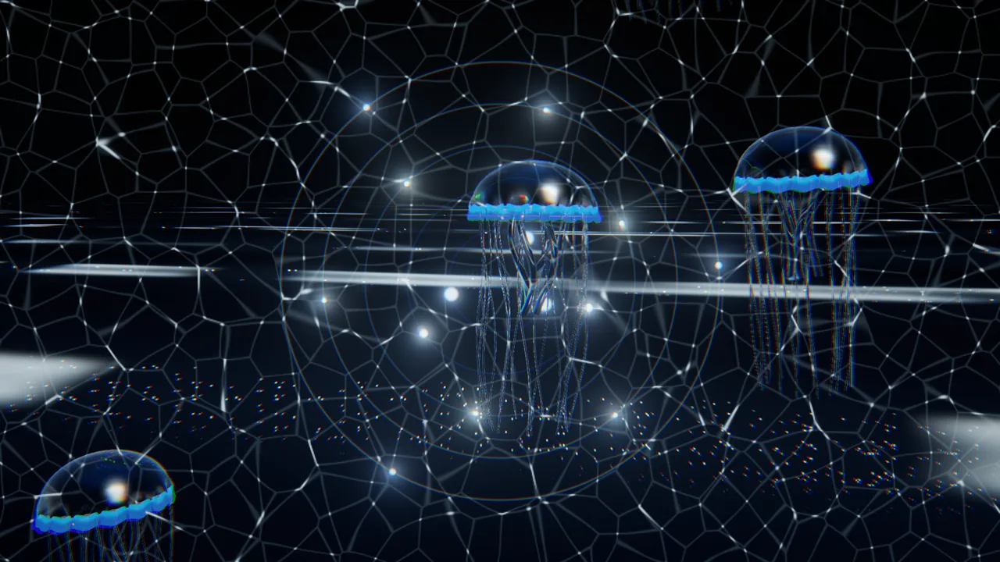
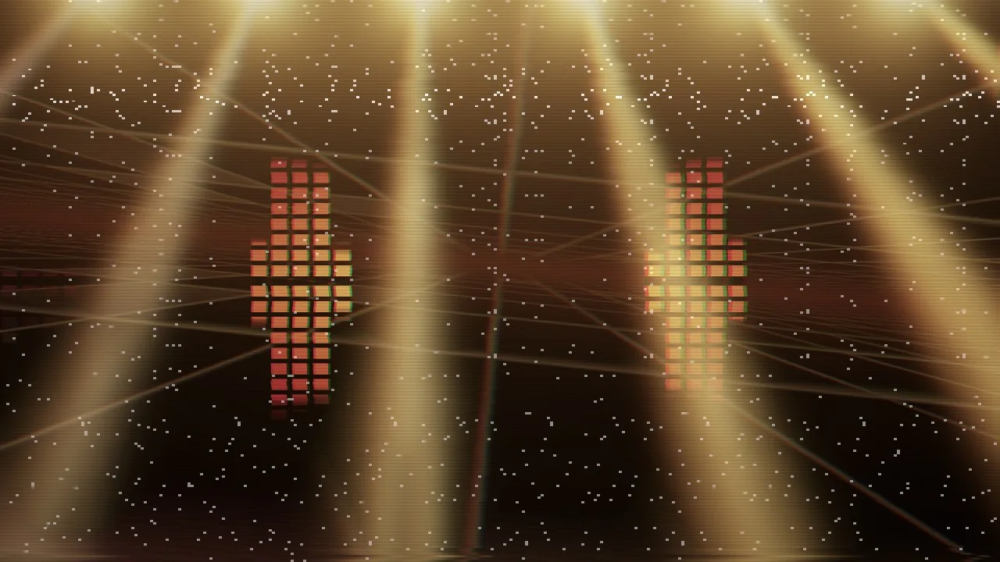
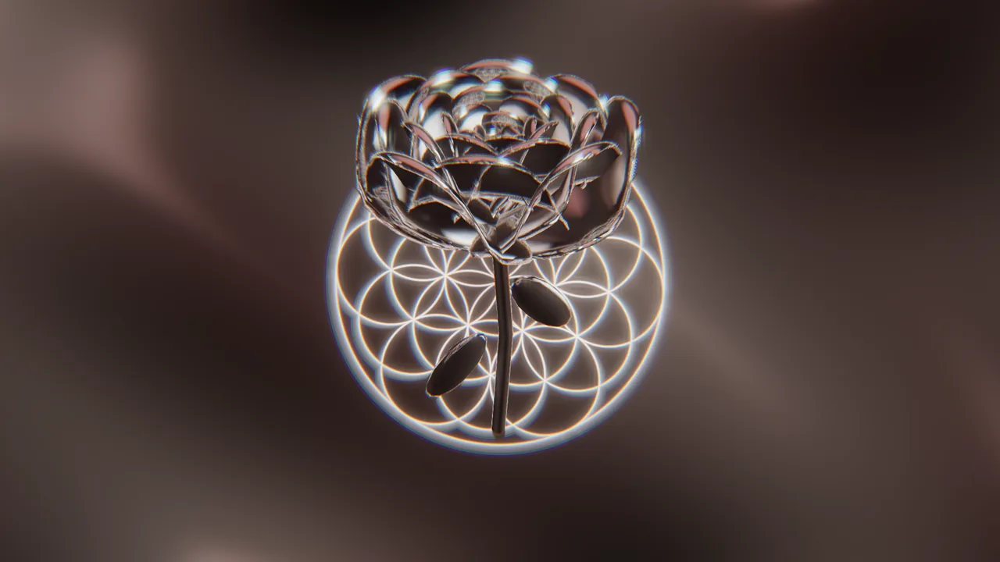
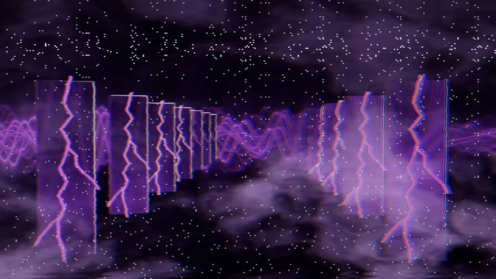
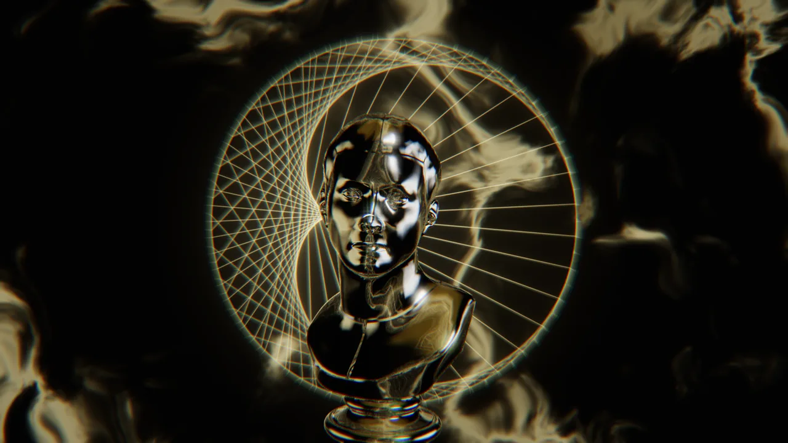
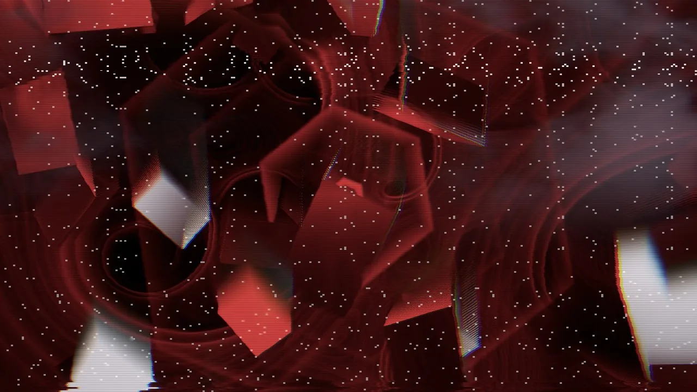
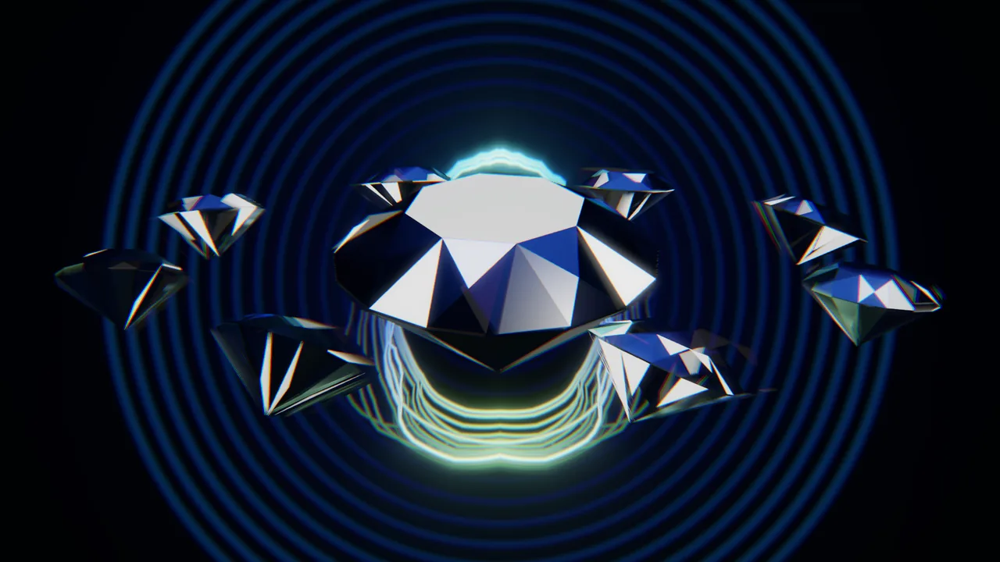
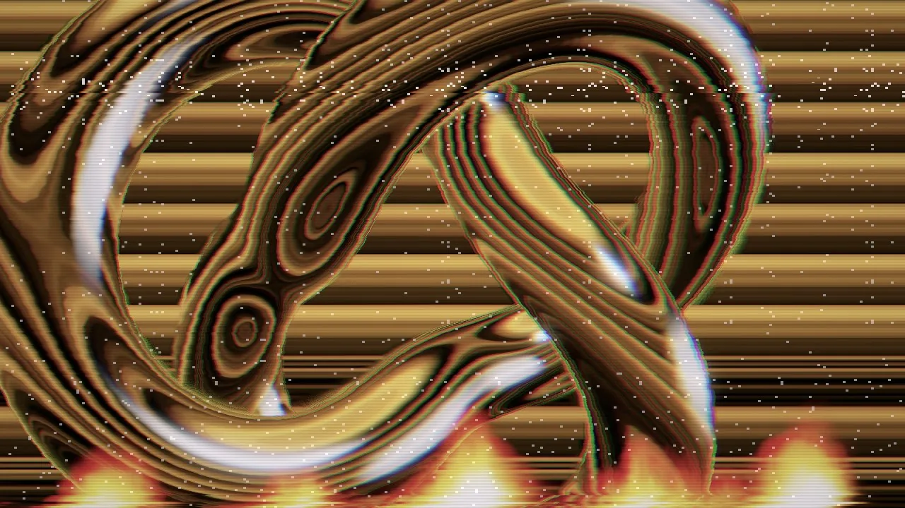
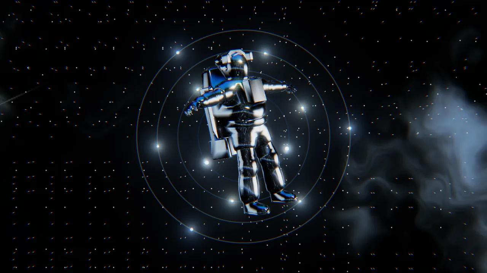
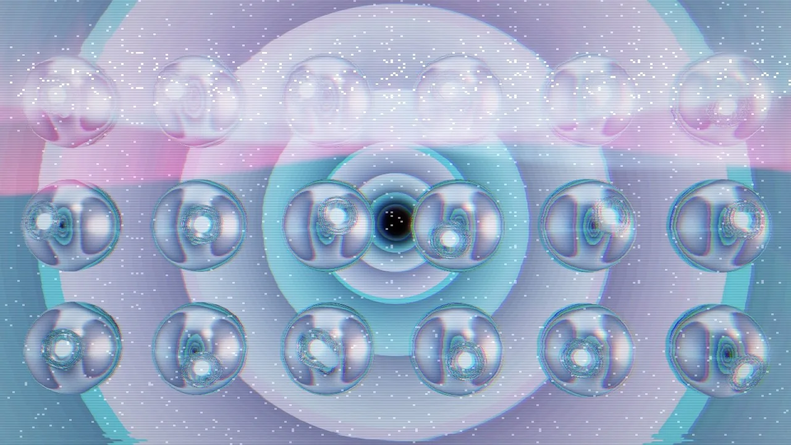
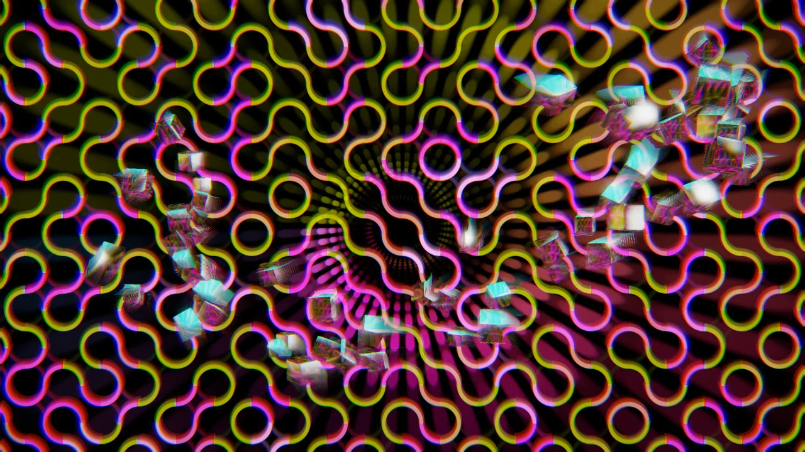
The rig
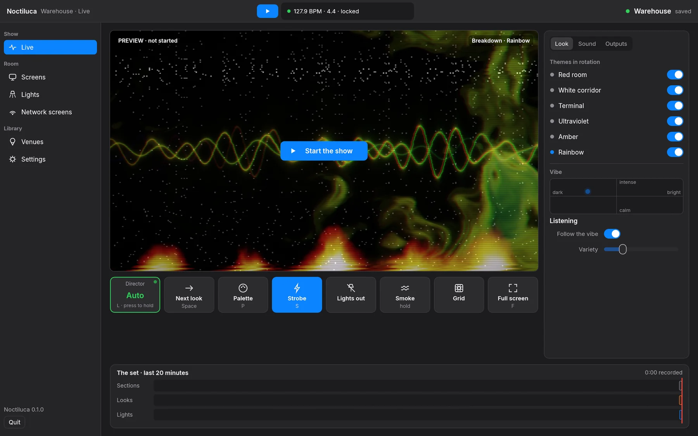
The program, performance pads and an inspector for the look, the sound and the outputs, in a control window built like a pro audio app. A timeline keeps the last twenty minutes: sections, looks, light effects.
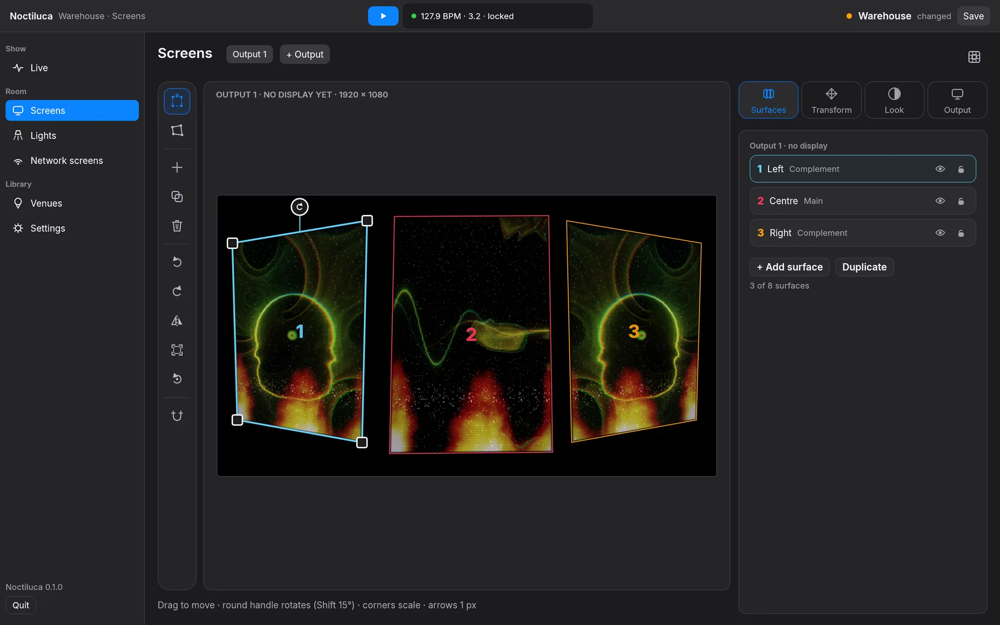
Up to eight surfaces on four outputs. Transform and corner-pin tools, real perspective, and a calibration grid projected right onto the wall. Main surfaces, copies, or complements that share the colour and the beat but show another picture.
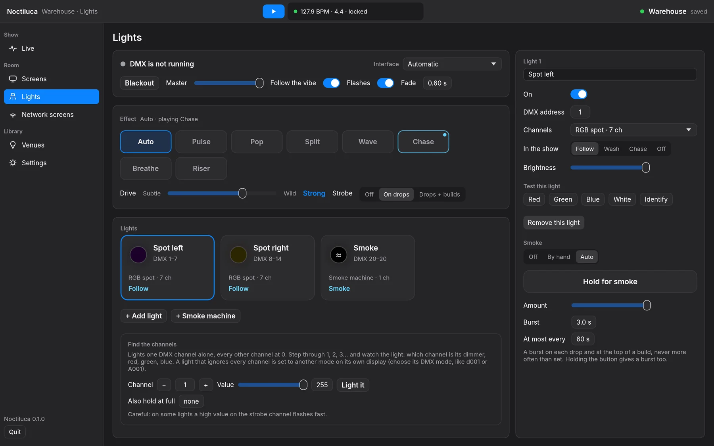
Open DMX and Enttec Pro style USB interfaces, told apart automatically. Seven light effects that follow the section, one Drive slider from subtle to wild, strobe and smoke on the drop, through the same safety limit as the screens.
Any Android TV box on the Wi-Fi becomes an output. Noctiluca installs a small receiver app on it and streams from the Mac's hardware encoder, drawn ahead by the measured delay so it lands on the beat.
Everything set up for a place in one readable name_nocvenue.json. Open, Save and Save As as in any Mac app, or drop the file on the window.
Fast flashing can trigger seizures. Every flash goes through one limiter: at most three a second (WCAG 2.3.1). Anything faster becomes a shallow shimmer.
Download
Free, for Macs with Apple silicon on macOS 13 or later.
brew install android-platform-tools.git clone https://github.com/sagistiki/noctiluca && cd noctiluca && cargo run --release